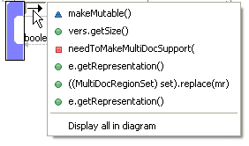
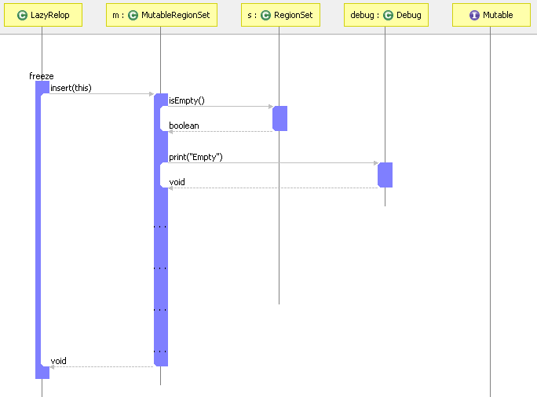
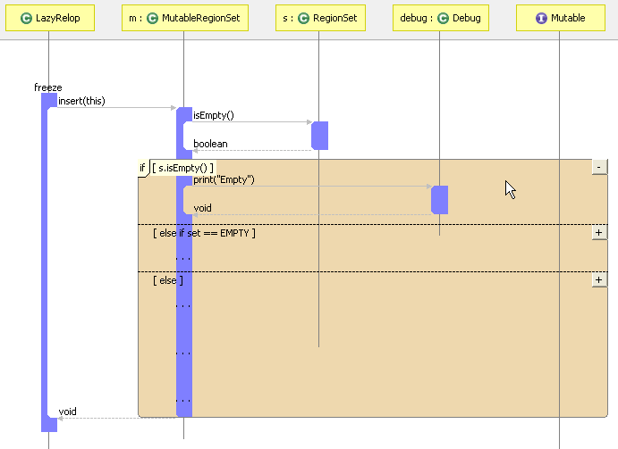
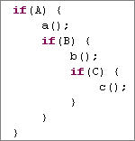
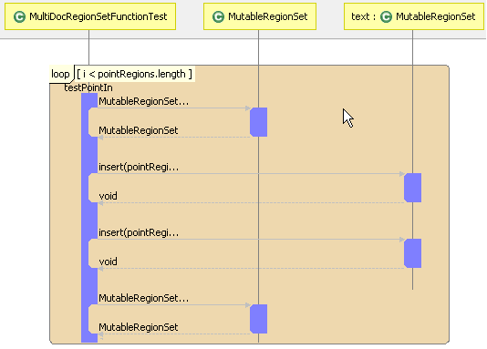

Analyze logic (and ensure all cases are handled effectively)
You can visually observe the possible flow of control that a system could take depending on various conditions or tests by using a sequence diagram, which display loops, iterations, and conditional statements.In order to add conditional control flow blocks to a sequence diagram, select a method, press the right side arrow button, and choose "Display all in diagram".

In an if-block, a large number of paths may be possible when only one is actually executed. So, only the method calls that would execute if the "if" condition is true are shown at first, and all "else if" and "else" branches are collapsed (shown as simply "...").

Mouse over the if block to reveal the highlight that surrounds conditional control flow blocks. This will also reveal the conditions (such as "set==EMPTY" in the diagram below) and the method calls that may or may not execute depending on the evaluation of the conditions. The dashed line separates the various if/else-if/else execution paths.

You can collapse or expand each portion of the block to reveal the statements in any if, else if, and else section. Press the button to collapse a branch, and the button to expand a branch.
As you can see from (B), nested conditional blocks are also shown in a diagram. Their highlight appears as a darker shade; the darkness of the shade corresponds to how deeply nested the condition is. For example, for the following code, the highlight surrounding the call to c() would be two shades darker than the highlight surrounding the call to a(). 
The same statement inside a loop may execute multiple times, so loop statements are displayed only once.

Loops are not collapse-able or expandable.
---- Your question not answered? Send an email to support@architexa.com ----
{kind=link}
{kind=link}